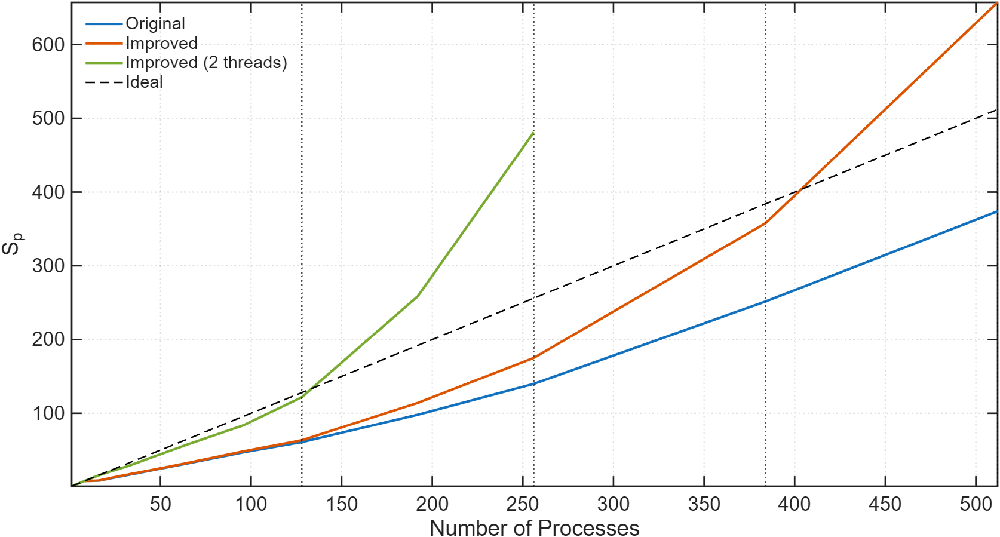

Integrated Master's Degree in Electrical and Computer Engineering
Oct 2020 – Jul 2026
Technical University of Crete | GPA: 7.92/10
Thesis: "Profiling and Parallel Performance Optimization of a Lattice-Boltzmann 2-phase Flow Simulator" | Grade: 10/10
- Identified performance hotspots in an existing MPI program using Scalasca and Score-P.
- Optimized MPI parallelism and scalability on the ARIS supercomputer (GRNET), incorporating OpenMP threading.
- Achieved a maximum parallel speedup of 481.1× on 256 cores, exhibiting superlinear scaling.
